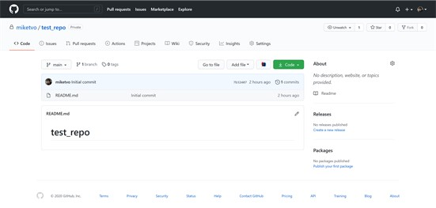
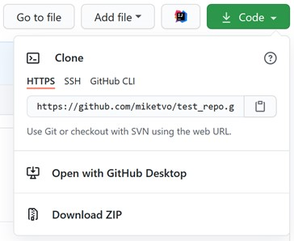
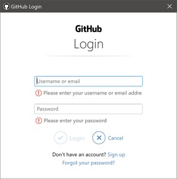

A (Non)comprehensive Git and GitHub Tutorial
Version control is an important concept in software development. Collaboration of many contributors to one project requires great coordination. Sometimes, experimental changes to the project may be needed, and if two or more people made conflicting changes, it is very time consuming to resolve the issue, especially if the collaborators are working over long distances or if direct communication is impractical. Version control is a piece of software that aids with resolving those issues and helps increasing the speed and efficiency of development by keeping track of file changes and archiving older versions of a project.
Git is a free and open source version control software (among others like SVN, Mecurial, Monotone and many more…) aimed to expedite IT projects of both simple and complex architecture[1]. GitHub is an online repository (project) hosting website designed to work with Git. As of 2016, Git and GitHub are two of the most popular tools among professionals working with software development[2].
In the next 9 steps, we will learn how to install Git, set up a GitHub account and start using them for our projects. You should be familiar with navigating between different folders using your operating system command shell. Tutorial on how to use the command line can be found here:
- For Windows: www.freecodecamp.org
- For Mac: www.businessinsider.com
- For Linux: www.linux.com
Step 1: Registering a GitHub account to host your project online
- Register your account here.
- If you have never used GitHub before, it is recommended that you check out the Hello World guide provided by GitHub to understand the basic concepts of repository and workflow.
- GitHub is a paid service for large and complex projects. However, if you are a university student or teacher, you might be eligible for a discount on GitHub’s services. In that case, you can use the email provided by your school to sign up for a discount here. For further information, please contact your organization.
Step 2: Installing and setting up Git
- Git can be installed following the instructions here
- The first thing to do after Git is installed on your local machine is configuring Git with your GitHub username and email address. Open your terminal and type the following commands (Git commands are the same across operating systems):
$ git config --global user.name "your-github-username"
$ git config --global email "your-email@domain.com"
- Done! It is that simple. Now we will learn how to use Git and GitHub to version control your project.
Step 3: Create a new project via GitHub
- Login to your GitHub account. Assuming you have already followed the “Hello World” tutorial provided by GitHub, you should be able to create a new repository for your project. After it is created, it should look like this on your browser:

- Click the green “Code” button and copy the HTTPS link from the drop-down menu.

- If you already have an existing project on your local machine skip to “Step 4: Configure your existing project to work with Git”.
- Navigate to a folder on your local machine where you would like to put your project and type the following command:
$ git clone paste the copied https link here
- You will be asked to login to your GitHub account either via a graphical window or the command prompt:

Or
Username for 'https://github.com': yourusername
Password for 'https://yourusername@github.com': yourpassword
- If you entered everything correctly, you would now have your project folder downloaded onto your machine and the command line output should be similar to this:
remote: Enumerating objects: 3, done.
remote: Counting objects: 100% (3/3), done.
remote: Total 3 (delta 0), reused 0 (delta 0), pack-reused 0
Unpacking objects: 100% (3/3), done.
Step 4: Configure your existing project to work with Git
- Ignore this step if you have already completed “Step 3: Create a new project via GitHub”.
- Navigate to your project folder using the command line.
- Initialize the folder to work with Git with this command:
$ git init
- Add the files and changes you want Git to keep track of:
$ git add .
# Add all the files and folders in the current folder.
# Alternatively, you can use git add filename for individual
# files.
- Commit the added content to Git’s library to be prepared for uploading, note that the comment in the double quote is required:
$ git commit -m “Initial commit”
- Setup Git to work with GitHub for the current project:
$ git remote add origin paste the https link in step 3 here
# Sets the new remote
$ git remote -v
# Verifies the new remote URL
- “Push” your files to GitHub to finish:
$ git push origin main
Step 5: Your editor of choice
For software development projects, there are many text editors that support Git version control. The most popular ones are Visual Studio Code, Atom, and Sublime Text. If you are working with a modern integrated development environment (IDE), it will most probably also have Git support. Consult the relevant software documentation for more information on version control support. After installing and configuring your editor, you should be able to start writing your code and building your project. Next comes the exciting part!
Step 6: Add, commit and push
To start contributing to the project we are hosting on GitHub, the add, commit, and push commands are our powerful allies. After you have finished with your edits on the local file, it is time to upload it onto the project GitHub repository.
$ git add .
$ git commit -m “description of your changes”
$ git push
For individual files, you can use this command instead:
$ git add filename
Step 7: Pull and how it can help you resolve conflict
Conflict happens when multiple people are working on one file and their local changes does not match that of the online repository. In this case, attempts to push your changes to the repository will result in an error message:
To https://github.com/yourusername/repo.git
! [rejected] main -> main (fetch first)
error: failed to push some refs to 'https://github.com/ yourusername/repo.git'
hint: Updates were rejected because the remote contains work that you do
hint: not have locally. This is usually caused by another repository pushing
hint: to the same ref. You may want to first integrate the remote changes
hint: (e.g., 'git pull ...') before pushing again.
hint: See the 'Note about fast-forwards' in 'git push --help' for details.
Use the pull command to download the conflicting changes from the repository.
$ git pull
Username for 'https://github.com': yourusername
Password for 'https://miketvo@github.com':
remote: Enumerating objects: 5, done.
remote: Counting objects: 100% (5/5), done.
remote: Total 3 (delta 0), reused 0 (delta 0), pack-reused 0
Unpacking objects: 100% (3/3), done.
From https://github.com/yourusername/repo
7b32407..050181c main -> origin/main
Auto-merging README.md
CONFLICT (content): Merge conflict in README.md
Automatic merge failed; fix conflicts and then commit the result.
Step 8: Branching
When working on a new feature of a project, it is a good idea to modify a copy of the project itself before “merging” the copy into the main project files. This is called “branching” and is an essential process of software development.
Navigate to our git-ready project folder using the command line and type the following command:
$ git branch
* main # The currently active branch
branch1
branch2
The branch command can also create new branches:
$ git branch new-branch # This command has no output
To switch between branches, we “check them out”:
$ git checkout new-branch
Switched to branch 'new-branch'
When we are done with implementing new files into our branch, it is time “push” it to GitHub. If the branch already exists on GitHub and we are just adding to it, simply follow Step 6. On the other hand, if it only exists on our local machine and not on GitHub, we will have to use these commands instead:
$ git add .
$ git commit -m “add a new branch”
$ git push origin new-branch
This will create a new branch in the online GitHub repository and pushes the content of our new branch into it. After development of a new feature is complete, we can go to our GitHub repository with a web browser to create a pull request to merge the new feature into the main branch. More information on branching and merging can be found in the GitHub’s Hello World tutorial or here
Step 9: There is always more to learn!
This tutorial is intended as a crash course to get you started with using Git and GitHub. More advanced tutorials such as these on freeCodeCamp can also help us delve deeper into software development workflow using version control. Git is a very powerful and versatile tool, so to utilize all of its feature, please refer to the Git and GitHub documentation for more comprehensive information. In the IT world, it is unavoidable that we will have to read a lot of documentation as new technologies emerge and replace the obsolete. This is one of the most important skills for an IT professional.
If you have any feedback or improvement on this tutorial, feel free to leave a comment or contact me via email.
Godspeed and good luck on your journey!
References
- Software Freedom Conservancy. "git --everything-is-local." https://git-scm.com/ (accessed December 5th, 2020).
- J. D. Blischak, E. R. Davenport, and G. Wilson, "A Quick Introduction to Version Control with Git and GitHub," PLOS Computational Biology Education collection, p. 1, January 19th 2016, doi: 10.1371/journal.pcbi.100466.

Author
Michael Tuong Minh Vo
I'm currently pursuing a Bachelor degree in Information Technology at RMIT University Vietnam (Student ID: S-3877562)
Contact me via my email